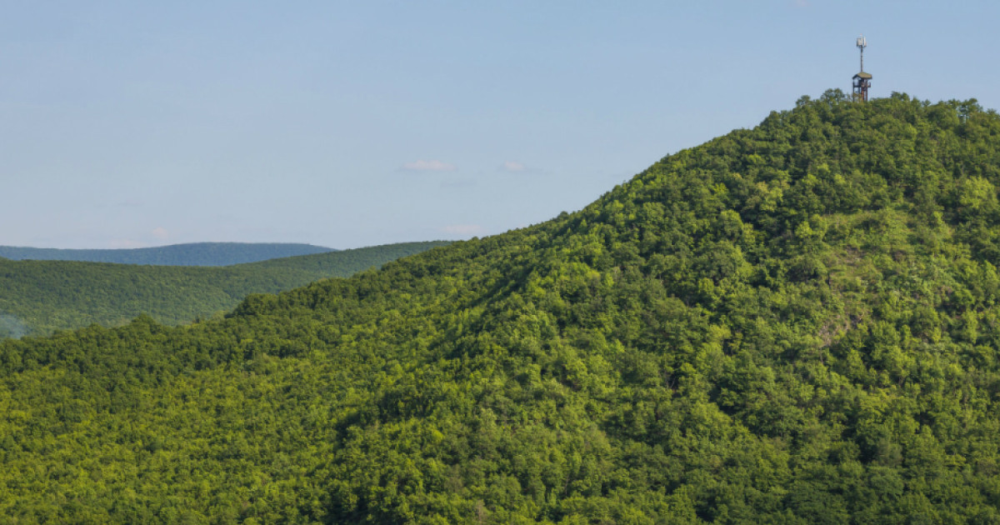

Az ország területének nagy része 200 méternél alacsonyabb tengerszint fölötti magasságon fekszik. Noha Magyarországon számos középhegység terül el, a 300 méteres magasságot meghaladó kiemelkedések az ország területének kevesebb, mint 2%-át foglalják el.

Az Északi-középhegység vagy Észak-magyarországi-középhegység[1] elnevezés kétféle jelentésben is használható
| hegység neve | legmagasabb pontja | magassága |
|---|---|---|
| Mátra | Kékes | 1014 m |
| Bükk | Szilvási-kő | 961 m |
| Börzsöny | Csóványos | 938 m |
| Pilis | Pilisi-tető | 756 m |
| Mecsek | Zengő | 682 m |